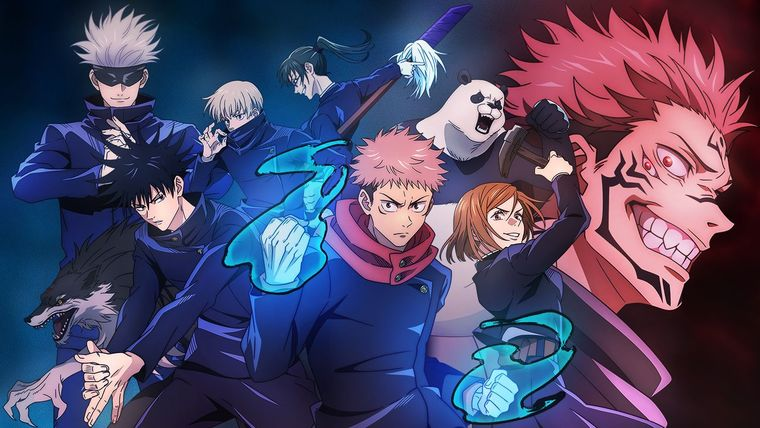

About Anime
Jujutsu Kaisen (呪術廻戦,"Sorcery Battle")[a] is a Japanese manga series written and illustrated by Gege Akutami. It was serialized in Shueisha's shōnen manga magazine Weekly Shōnen Jump from March 2018 to September 2024, with its chapters collected in 28 tankōbon volumes as of October 2024. The story follows high school student Yuji Itadori as he joins a secret organization of Jujutsu Sorcerers to eliminate a powerful Curse named Ryomen Sukuna, of whom Yuji becomes the host. Jujutsu Kaisen is a sequel to Akutami's Tokyo Metropolitan Curse Technical School.
Genres
- Action
- Drama
- Mystery
- Supernatural
Characters
- Yuji Itadori
- Megumi Fushiguro
- Nobara Kugisaki
- Sataru Gojo